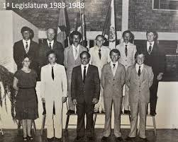
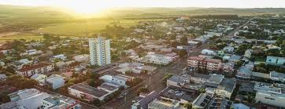
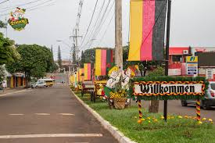
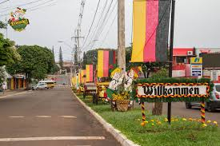
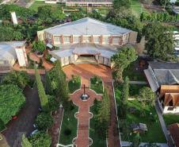
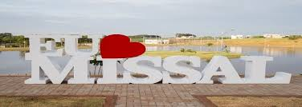

História
Missal foi fundada em [ano] e possui uma rica história ligada à colonização e agricultura. Missal é uma cidade localizada no estado do Paraná, na região sul do Brasil. Com uma população de aproximadamente 10 mil habitantes, a cidade possui uma história rica e características únicas que a tornam especial. O objetivo deste post é contar a história de Missal, desde sua origem até os dias atuais, destacando sua cultura, economia e tradições.
 Turismo
Conheça os principais pontos turísticos de Missal. Turismo ara quem procura turismo religioso, Missal é o lugar. Há a Igreja Matriz, em formato de um Missal aberto visto do alto. Na comunidade de São Pedro, a escultura do padroeiro possui 4 metros de altura, atraindo turistas de diversas localidades, assim como a Gruta de São Cristóvão, padroeiro dos motoristas.
 

Cultura
A cidade é conhecida por suas festas e tradições culturais que atraem visitantes de toda a região. A Festa Alemã de Missal é considera a maior festa típica do Oeste do Paraná. O evento foi criado em 2002 para preservar a cultura e, divulgar as tradições de geração a geração. A Deutsches Fest acontece todos os anos no fim de semana seguinte à Páscoa.  